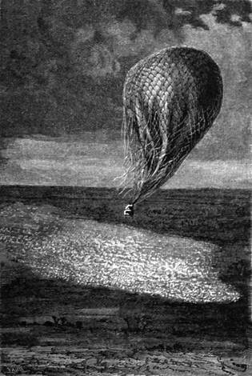

Země v ohybu Nigera. – Podivná podívaná na hory Homborské. – Kabra. – Timbuku. – Záměr doktora Bartha. – Klesání. – Kam se nebi zlíbí.
Za tohoto mokrého pondělka krátil doktor Fergusson soudruhům a sobě chvíli tím, že vyprávěl tisíceré podrobnosti o krajině, kterou se brali. Půda dosti plochá nezavalovala plavbě překážek. Jedinou starost působil doktorovi neblahý severovýchodní vítr, jenž dul vztekle, vzdaluje ho od šířky Timbukta.
Niger postoupiv na sever až k tomuto městu, zahýbá se jak ohromný trysk vody a míří pak k okeánu Atlantickému proudem široce rozlitým; v tomto ohybu jest kraj velice rozmanitý, hned bujně úrodný, hned na dobro vypráhlý; neobdělané pláně střídají se s kukuřičnými poli, která ustupují širým prostranstvům porostlým kručinou; všelicí ptáci vody milovní, pelikáni, volavky, rybaříci, žijí v četných hejnech na březích bystřin a močálů.
Čas od času objevil se tábor Tuaregů skrytých pod koženými stany, kdežto ženy zabývaly se venku prací, dojíce velbloudice a kouříce z dýmek u velikých ohnišť.
Do osmi hodin večer ujela Viktorie přes tři sta kilometrů na západ, a tu se cestovatelům naskytlo nádherné divadlo.
Několik paprsků měsíčních prodralo se skulinou v mracích, a prokmítajíce proudy dešťovými dopadalo na pásmo hor Homborských. Nelze si představiti nic podivnějšího nad tyto hřbety čedičového vzhledu, any se obrážely fantastickými obrysy na zachmuřené obloze, vypadajíce jako báječné rozvaliny ohromného středověkého města, jakými jeví se za tmavých nocí ledové hory polárních moří žasnoucímu zraku.
„Toť pohled vzatý z Tajností Udolfových,“ pravil doktor; „Anne Ratcliffová nebyla by těm horám dodala děsivější tvářnosti.“
„Na mou věru!“ odpověděl, „nechtěl bych se procházet večer samoten v tomto kraji přízraků. Hleďte, pane, odnesl bych celou tu krajinu do Skotska, kdyby nebyla tak těžká. Vypadala by pěkně na březích jezera Lomondského, a turisté hrnuli by se tam o překot.“
„Náš balon není tak velký, abys mohl ukojiti takovou choutku. Ale zdá se mi, že se náš směr mění. Dobrá! zdejší skřítkové jsou velice roztomilí; rozdmychují nám větřík od jihovýchodu, který nás uvede na dobrou cestu.“
Viktorie odchýlila se vskutku více na sever a dne 20. ráno vznášela se nad spletilou sítí průlivů, bystřin, řek, hotovou motaninou přítoků nigerských. Některé z těchto průlivů, jsouce pokryty hustou travou, podobaly se tučným lučinám. Tu nalezl doktor opět cestu Barthovu, když tento vstoupil do lodice a doplavil se až do Timbukta. Niger jsa zšíří osmi set sáhů tekl zde mezi dvěma břehy hojně porostlými řeřichami a marhaníky; kroužkované rohy sajek ve stádech hopkujících míhaly se vysokou travou, kde číhal na ně mlčky krokodil.
Dlouhé řady oslův a velbloudů s nákladem zboží z Dženné zacházely pod krásné stromy; netrvalo dlouho, a v zatáčce řeky objevil se amfiteatr nízkých domů; na tarasech a střechách byla nakupena veškera píce sklizená v okolí.
„To je Kabra!“ zvolal radostně doktor; „toť přístav Timbukta; město není odtud vzdáleno ani osm kilometrů!“
„Jste tedy spokojen, pane?“ otázal se Joe.
„Jsem u vytržení, hochu.“
„Dobrá, čím dál tím líp.“
Za dvě hodiny rozložil se vskutku pod zraky cestovatelů král pouště, tajemné město Timbuktu, které mívalo jako Athény a Řím své učené školy a stolice filosofie.
Fergusson stopoval nejmenší jeho podrobnosti na plánu nakresleném samým Barthem a přesvědčil se o úplné jeho správnosti.
Město tvoří rozsáhlý trojúhelník narýsovaný na nesmírné rovině z bílého písku; jeho vrchol směřuje na sever a vniká úhlem do pouště; v okolí nic; sotva něco travin, zakrnělých mimos a keřových krsků.
Co se tkne tvářnosti Timbukta, představte si soubor hracích kulí a kostek; takový jest dojem z ptačího hledu; ulice dost úzké jsou vroubeny domy toliko přízemními a vystavěnými z cihel na slunci sušených a slaměnými a rákosovými chatami, z nichž tyto jsou kuželovité, ony čtverhranné; na tarasech povaluje se nedbale několik obyvatelův oděných křiklavým rouchem s kopím anebo puškou v ruce; ženy není v tuto denní dobu viděti ani jediné.

Mrak přihnal se s ohlušujícím hřmotem.
„Ale, jsou prý hezké,“ dodal doktor. „Vidíte tři věže tří mešit jediné zbylých z velkého počtu. Bývalá sláva a nádhera města poklesla silně! Na vrcholu trojúhelníku vypíná se mešita Sankorská s řadami galerií, spočívajících na podloubí slohu dost čistého; dále u čtvrtí Sane-Gungu je mešita Sidi-Jahia a několik dvoupatrových domů. Nehledejte tu ani palácův ani pomníků. Šejk je pouhým obchodníkem a jeho královským příbytkem kupecké skladiště.“ „Zdá se mi,“ podotkl Kennedy, „že pozoruji hradby napolo rozvalené.“
„Byly sbořeny Fulby čili Fullany roku 1826; tehdy bylo město větší o třetinu, neboť Timbuktu, od XI. věku cíl všeobecné baživosti, náleželo postupně Tuaregům, Sonrajcům, Maročanům, Fulbům; a toto znamenité středisko vzdělanosti, kdež učenec jako Achmed– Baba měl v XVI. století knihovnu o šestnácti stech rukopisů, není již leč tržištěm střední Afriky.“
Město hovělo na pohled skutečně velké bezstarostnosti; jevilo nakažlivou nedbalost měst v úpadku; náramné zasutiny hromadily se na předměstích, jsouce spolu s trhovým kopcem jedinou vypnulinou půdy. Za přeletu Viktorie hnul se sice jakýsi ruch, zavířeno na buben; ale kdož ví, měl-li poslední zdejší učenec kdy všimnouti si tohoto nového úkazu; cestovatelé, byvše opět uchváceni větrem z pouště, ujížděli nad klikatým tokem řeky, a Timbuktu bylo jim brzy jen jednou z prchavých vzpomínek cestovních.
„A nyní,“ pravil doktor, „zaveďte nás nebesa, kam se jim zlíbí.“
„Jen když to bude na západ!“ doložil Kennedy.
„E což!“ ozval se Joe, „nelekl bych se valně, byť šlo i o to, abychom se vrátili do Zanzibara touž cestou a přepluli moře až do Ameriky!“
„Jen kdybychom byli s to, Joe.“
„A co nám schází, abychom byli s to?“
„Plyn, hochu; balonu ubývá patrně vzestupné síly, i bude velice šetřiti, aby nás donesl až na pomoří. Ba budu nucen vyhoditi přítěž. Jsme příliš těžci.“
„Na tom, pane, nesejde pranic! Když se člověk celý boží den povaluje na loži jako lenoch, tloustne a nabývá váhy. Naše cesta je hotovou zahálkou, a až se vrátíme, naši přátelé sotva nás poznají, jak budeme tlusti a vypaseni.“
„To jsou úvahy hodné Joa,“ odvétil lovec; „ale vyčkej konce; víš-li, co nám nebe chystá? Máme ješte daleko k cíli cesty. Kde myslíš, Samuele, že dostihneš afrického pobřeží?“
„Na tu otázku, Dicku, je mi téžko odpovědět, jsme vydáni na milost i nemilost větrům velice proměnlivým; ale celkem bych se pokládal za šťastna, kdybych dorazil mezi Sierru Leonu a Portendick; tam jest jistý pruh země, kde bychom zastihli přátele.“
„A s jakou radostí stiskli bychom jim ruku; avšak bereme-li se aspoň žádoucím směrem?“
„Nevalně, Dicku, nevalně; pohleď na magnetickou střelku; tíhneme na jih a postupujeme proti Nigeru k jeho zřídlům.“
„To by byla znamenitá příležitost, abychom je objevili, kdyby nebyla již známa,“ odtušil Joe. „Což bychom v nejhorším případě nemohli nalézti nějaká jiná?“
„Ne, Joe; ale neměj starosti doufám, že se tak daleko nedostaneme.“
Když nastávala noc, vyhodil doktor poslední pytlíky přítěže; Viktorie se vznesla; ačkoli dmuchavka pracovala plným plamenem, udržela ji stěží ve výši; byla tu vzdálena na sto kilometrů jižně od Timbukta, a zítřejší jitro zastihlo ji na březích nigerských nedaleko jezera Debu.